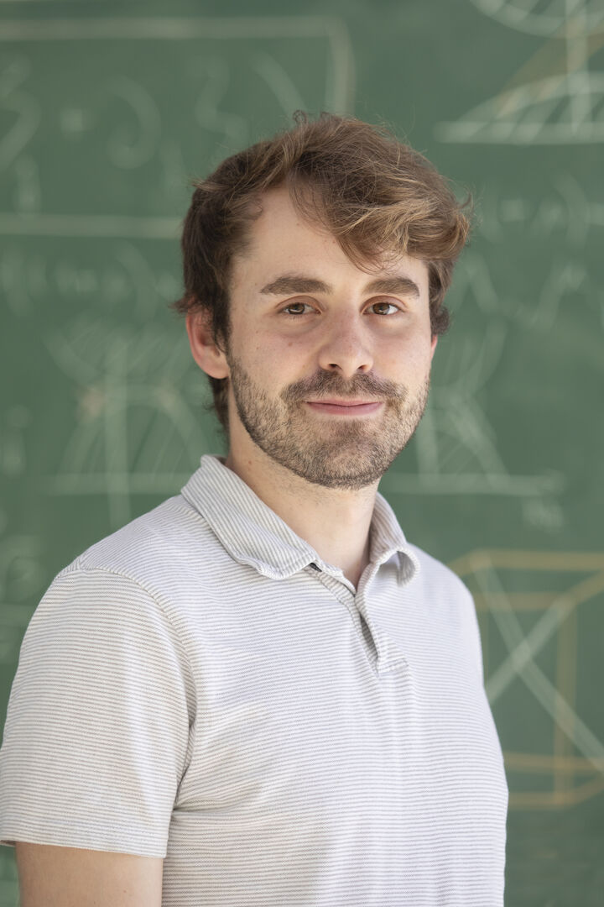

Hi, I'm Marc
I am a PhD student in experimental particle physics at DIPC, working within the NEXT collaboration, which searches for neutrinoless double beta decay with a high-pressure xenon detector. My work consists of detector hardware, data analysis and simulation.
Day to day that means building and maintianing our prototype detectors, calibration & data taking, writing software, and building a Geant4 simulation that helps us understand our detector geometries and performance.